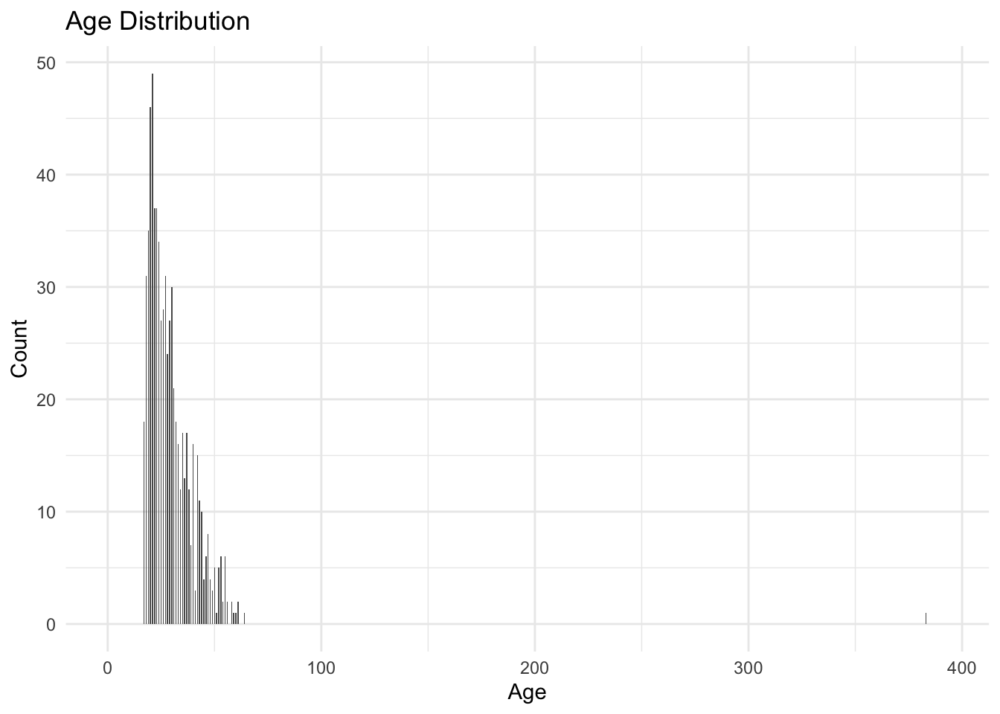

Task 1.2. through Task 1.8. Recode cyclical data, text data – N/A
Task 1.3. Recode text data into binary variable
—> start here by recoding gender, jundice, autism, class/ASD as binary?
autism$gender_binary <-ifelse(autism$gender =="m", 1, 0)autism$jundice_binary <-ifelse(autism$jundice =="yes", 1, 0)autism$Class.ASD_binary <-ifelse(autism$Class.ASD =="YES", 1, 0)# It made a new column, will need to delete original later
head(autism[c("gender", "gender_binary")])
gender gender_binary
1 f 0
2 m 1
3 m 1
4 f 0
5 f 0
6 m 1
table(autism$gender_binary)
0 1
337 367
Task 2.2 Using the ff_glimpse() function from the finalfit package, provide a snapshot of missingness in this dataset. This function also returns the number of levels for categorical variables. If there is any variable with large amount of missingness (e.g. more than 75%), remove this variable from the dataset.
✅ 1️⃣ Count how many “?” entries exist in ethnicity
sum(autism$ethnicity =="?", na.rm =TRUE)
[1] 95
✅ 2️⃣ Check total rows (for percentage)
nrow(autism)
[1] 704
✅ 3️⃣ Compute percentage of missing (“?”) entries (–> I decided it’s good enough, as the example from class had 75% threshold)
mean(autism$ethnicity =="?", na.rm =TRUE) *100
[1] 13.49432
Yep—those quotes are literally part of the values (e.g., 'United States' vs Bahamas). That comes from inconsistent quoting in the source or how it was imported, and it will bite you later because they’ll become different factor levels.
✅ If you’re done using the original columns
If you’ve already converted variables like gender, jaundice, family_mem_with_asd, etc. into _binary versions (0/1) and those originals were categorical or text,
then yes — you can safely remove them to avoid redundancy before modeling.
⚠️ If you’re still exploring or not sure yet
Keep both for now! You can always drop the original columns later once you’ve confirmed that: 1) the _binary variables are correctly coded (0 for No, 1 for Yes, etc.) 2) and your model runs fine without the originals.
Warning: Removed 2 rows containing non-finite outside the scale range
(`stat_bin()`).
Warning: Removed 2 rows containing missing values or values outside the scale range
(`geom_bar()`).

# Trying to remove that weird error/outliner age around 380 years old summary(autism$age)
Min. 1st Qu. Median Mean 3rd Qu. Max. NA's
17.0 21.0 27.0 29.7 35.0 383.0 2
autism <- autism %>%filter(age <=100)
# Trying again to see if the 383 got removed -- and it's much better! 🙌ggplot(autism, aes(x = age)) +geom_histogram(binwidth =0.5) +labs(title ="Age Distribution",x ="Age",y ="Count") +theme_minimal()
# Because the column "result" was numeric, I should be able to plot it hte same way: ggplot(autism, aes(x = result)) +geom_histogram(binwidth =0.5) +labs(title ="Result Distribution",x ="Result",y ="Count") +theme_minimal()
Assignment 1: Task 2.3 Most of the variables in this dataset are categorical, and particularly a binary variable with a Yes and No response. Check the frequency of unique values for all categorical variables. If there is any inconsistency (e.g., Yes is coded as both ‘y’ and ‘Y’) for any of these variables in terms of how values are coded, fix them. Also, check the distribution of numeric variables and make sure there is no anomaly.
# Categorical variablescat_vars <-c("gender", "ethnicity", "jundice", # use your dataset’s spelling"austim", # same spelling as in your data"contry_of_res", # same spelling as in your data"Class.ASD")# Numeric variablesnum_vars <-c("age","result")# Binary-coded versions binary_vars <-c("gender_binary","jundice_binary","Class.ASD_binary")
--- gender ---
f m
335 366
--- ethnicity ---
? Asian Black Hispanic Latino
93 123 43 13 20
Middle Eastern others Others Pasifika South Asian
92 1 30 11 36
Turkish White-European
6 233
--- jundice ---
no yes
632 69
--- austim ---
no yes
610 91
--- contry_of_res ---
Afghanistan AmericanSamoa Angola
13 2 1
Argentina Armenia Aruba
2 2 1
Australia Austria Azerbaijan
27 4 1
Bahamas Bangladesh Belgium
2 3 3
Bolivia Brazil Burundi
1 9 1
Canada Chile China
15 1 1
Costa Rica Cyprus Czech Republic
1 1 1
Ecuador Egypt Ethiopia
1 3 2
Finland France Germany
1 11 4
Hong Kong Iceland India
1 2 81
Indonesia Iran Iraq
1 7 1
Ireland Italy Japan
5 5 1
Jordan Kazakhstan Lebanon
46 3 1
Malaysia Mexico Nepal
5 8 1
Netherlands New Zealand Nicaragua
10 80 1
Niger Oman Pakistan
1 1 3
Philippines Portugal Romania
4 1 3
Russia Saudi Arabia Serbia
7 3 1
Sierra Leone South Africa Spain
1 2 3
Sri Lanka Sweden Tonga
14 2 1
Turkey Ukraine United Arab Emirates
1 2 82
United Kingdom United States Uruguay
77 113 1
Viet Nam
5
--- Class.ASD ---
NO YES
512 189
summary(autism[num_vars])
age result
Min. :17.00 Min. : 0.000
1st Qu.:21.00 1st Qu.: 3.000
Median :27.00 Median : 4.000
Mean :29.19 Mean : 4.889
3rd Qu.:35.00 3rd Qu.: 7.000
Max. :64.00 Max. :10.000